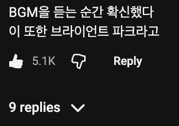

철판은 쟤들 시점에서 길들인다 그런거아님? 일부러 저런다는거 같던데 그래서 코리안바베큐 가서 불판갈아주면 안좋아한다는글 본적있음
시즈닝?
그게 퐁드라고 마이아르의 결정체라서 주로 소스 만들 때 씀
쟤넨 고기불판도 블랙쿼터제를 해?
맛업다고 하면서 산뜻한 효과음 넣으니까 개웃기네ㅋㅋㅋㅋㅋㅋㅋㅋ
딱 봐도 존나 맛없게 생겼네
요즘 전세계적으로 병적으로 위생에대해 집착하는게 있는듯
눈에 보이는거+트집잡을거
딱 좋잖아ㅋㅋ
저정도 위생이란건 그냥 신경쓰는거야. 집착이 아니라. 인도가서 하루도 못버틸꺼면서 이런소리하지마 ㅋㅋ
커뮤생리질특) 미국 뉴욕에서 갑자기 인도됨ㅋㅋㅋ
전세계적 이라고 댓달길래 한건데 ??
글 못읽음?
언제부터 인도가 글로벌 스탠다드였음?
심지어 본문은 미국 뉴욕인데?
억지부리려고 극단적 사례 끌고온거 맞잖아
중국인처럼 굴지말자
대댓단거에서 이러고 있네 ?
글고 전세계적으로 이럴때는 스텐다드 문제가 아닌데 ?? 영어로 바꾸면 해석잘 안됨? 인구 1위국 가져왔는데 스탠다드 이러고 있네
뉴욕시 유색인종 비율이 70% 인 세상에 살면서
ㅋㅋ 글고 뭔 뜬금없이 중국인
넌 찐인듯
인도가 인구 1위니까 글로벌 스탠다드가 인도다?
그럼 중국도 글로벌 스탠다드냐?
뉴욕 유색인종 비율은 왜 나오고
개찐따새끼네ㅋㅋ
뭔 뜬금없이 글로벌스텐다드 가져오면서 그걸로 따지냐고 넌 세상이 백인사회냐? 사대주의에 쩔어서
아아 그래서 중간에 뜬금없이 중국인 튀어 나왔구나 ㅋㅋ 중국에 사대하다 이제는 백인에 사대하자 이런소리냐?
그냥 세계적으로 라는 말에는 그냥 전 지구적인거야.
그럼 인도 얘기는 왜 확대시킨건데? 좆찐따ㅋㅋㅋ
내가 애초에 "전세계적으로" 라고 말한 댓글에 대댓 단거라고 뭘 확대해
전세계(X) -> 대한민국만 유독(O)
저기 경기장 밖에서 음식사들고 못들어감 그리고 조온나 비싸 씨발거
어허 시즈닝
볶은 양파가 차갑고 고기도 질기고 치즈도 제대로 안녹이고 빵도 안구워주고... 설명 들으니까 존나 맛없어 보이긴 하네
32000원이지만 또 먹긴 싫은..
역시 크보가 최고다
저긴 맛없어도 꾸준하게 손님 공급이 되는 곳이라 굳이 맛이 있을 필요가 없음
진짜 개비싸다
한국 야구장에서는 먹을거로 급나누기 하면 큰일 나겠지?
쟤네 걍 철판 시즈닝 해놓은 거 아님?
저기서 3만원이면 우리나라에서 한 8천원에 먹는거 아님? 개혜자인듯 ㄷㄷ
저렇게 할거면 전자레인지에 좀 더 돌리는게 낫지않음? 치즈 저렇게 줄거면
층마다 사먹을 수 있는 음식이 다르다고??? 자본주의 본진이 다르긴 다르네;
철판 저거 시즈닝인지 지랄인지
청결은 둘째치고 두껍게 쌓인 탄 코팅 때문에 열전달은 안되고 검댕이만 묻고 속 까지 열전달 힘들 것 같은데
저지랄 할거면 수비드로 1차 익히고 철판에선 ㄹㅇ 시즈닝만 해야지
치즈도 같이 시즈닝하고
근데 그러면 32000원이 아니라 95000원이겠지?
충분히 탄화 되고 난 뒤에는 일반 프라이팬의 코팅과 똑같은 역할을 하긴 함
다시 영상 보니까 갈색 육즙이랑 탄검댕이 뒤섞였는데 이건 탄화가 안된 철판같은데...
매일 철판 닦고 다시 시즈닝? 탄화? 시키는 것 같은데 사실상 마지막 주문 빼곤 어중간한거 아님?
근데 화면으로 보는거랑 실제로 먹는거 그리고 평론가들 입장이 다 다른가봐
작년에 전문매체들에서는 고기품질과 조리상태가 하나같이 높이 평가할 정도로 야구장 음식중에는 최상위권에 속하는게 본문의 스테이크 샌드위치래
한국 관광객들 먹어본 후기로는 그레이비 소스 덕분에 처음 세입까지는 맛있는데 그 뒤로는 금방 물리는 느끼하면서 묵직한맛이라 하더라
꽃등심? 아랫등심 아님?
그냥 저렇게 팔아도 돈이 남으니까 저러는거지 딱히 돈을 많이 벌고 싶다거나 음식에 욕심이 있어 보이진 않네 ㅋㅋ
시즈닝떄문에 그렇다해도 저 탄매 묻어서 쓴맛올라올텐데
철판이 더러운 게 아니라 기름과 시즈닝 때문에 금방 저렇게 타 버려서 그런 거 아닌가?
저 유튜버는 이것저것 비싼거 많이 먹고 다니는데 요리는 전혀 모르는 것 같더라...
1. 저 메뉴는 필리 치즈 스테이크가 아니라 뉴욕 스테이크 샌드위치임. 필리 치즈 스테이크는 얇게 썰어서 철판에 굽는게 핵심이라 절대 '필리'라고 부를 수 없음.
2. 마찬가지로 고기도 딱 봐도 꽃등심(Ribeye)이 아니라, 뉴욕 스테이크 샌드위치에 일반적으로 쓰는 채끝(Strip Loin)임.
음식 유튜버면 미국 식문화에 대한 기본 지식은 갖고 있어야지....
청경채 후추 반점을 보고 안 씻어서 흙 묻었다고 말하는 다른 쇼츠를 본 이후로 신뢰가 뚝 떨어짐
평양출신은 니미ㅋㅋㅋㅋ
퐁드고 나발이고 저 상태면 그냥 존나 더러운거 맞음
저 아저씨 영상 보면 미국 음식이 진짜 비싸고 창렬이더라 ㅋㅋ
영국놈 후손들이 그렇지 머